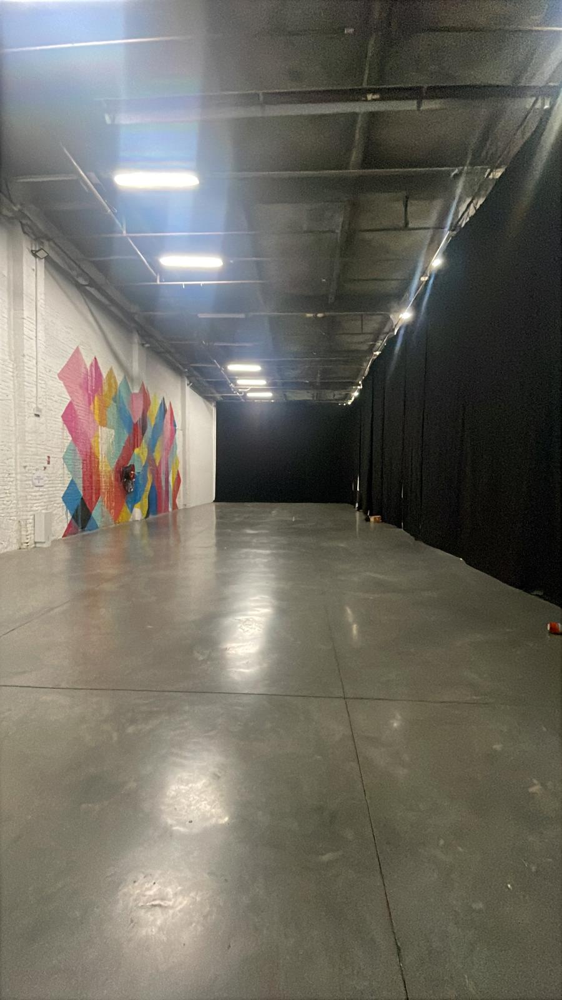
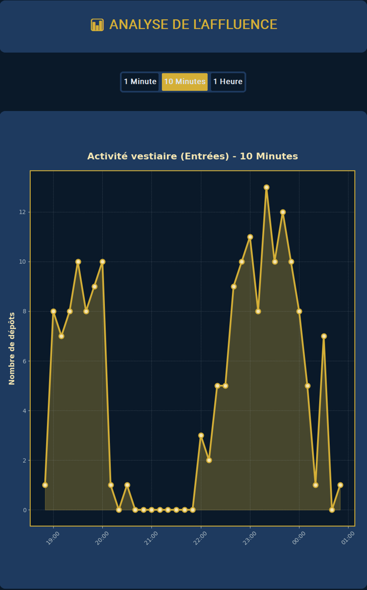

MS Mechanical Engineering student at Stanford University · Double degree with Arts et Métiers Institute of Technology
Study and design of a cloakroom for the "Nuit des Fignoss" Gala (60 hrs)
This was a personal project that I developed to improve the experience of the "Nuit des Fignoss" Gala - Arts et Métiers ParisTech Gala (Lille). To improve the experience of our guests, I looked back at their feedback, and this was the most popular opinion: "The waiting and the management of the cloakroom is a catastrophe!". Therefore, I decided to change it!

The empty room before the installation of the cloakroom
This year, the Gala was expecting 3,000 guests, and the challenge was even greater because, for the first time in 25 years, it took place outside the school. That additional constraint obliged me to be even more professional in the management of the cloakroom than before. So I started by studying the previous Galas: their weaknesses and their strengths. Thanks to Mister Quenehen, I managed to analyze the Gantt diagrams and reports of the previous editions, allowing me to understand the major issues of this cloakroom. This precious information first highlighted that every guest had too much "work" to do to hand over their clothes, and secondly that every worker of the cloakroom was lost in the organization because it was unclear. These were the two biggest challenges!
Service improvement:
As the Gala already used QR codes to manage the entry, I decided to use the same QR code for the cloakroom. When a guest comes to the cloakroom, the worker scans their QR code with the computer camera and then scans the bar code of the storage holder. In this way, the clothes are linked with the QR code and are stored at the storage holder attributed to it. Moreover, I decided to add tags on the clothes as well as on the hangers, to be sure to perfectly match every item with its storage holder. This new process was also very efficient when the guests came back to pick up their clothes: scanning the QR code a second time gives the storage holder and allows the worker to find the clothes easily.
NUIT DES FIGNOSSVESTIAIRE
🎫 Enregistrer
🔍 Rechercher
📜 Historique
📊 Affluence
●Mode: Enregistrement
Live webcam view (QR code detection)
En attente du QR Code...
Scanner le code-barres ici...
Reproduction of the scanning interface I coded in Python (CustomTkinter) for the cloakroom desks
The program has four modes. "Enregistrer" (register) reads the guest QR code with the computer camera, locks it, and then links it to the bar code of the storage holder scanned with a handheld scanner; a QR code already registered is refused. "Rechercher" (search) gives back the storage holder when the guest QR code is scanned again. "Historique" (history) shows every scan made for one QR code. Finally, "Affluence" (attendance) plots the number of deposits per 1 minute, 10 minutes or 1 hour. Every association and every scan is saved with its time in CSV files, and a beep confirms each scan so the worker does not need to look at the screen.
I coded it in Python with OpenCV and pyzbar for the QR code detection, CustomTkinter for the interface, and pandas and matplotlib for the attendance graph.
Cloakroom formalization:
Thanks to my warehouse operator experience, I managed to improve the cloakroom organization. I used an XX-00-00 combination as a logical location of the hanger: first XX for the letter of the column (from A to H), then 00 for the number of the gantry (from 1 to 12) and finally 00 for the number of the hanger on the gantry (from 1 to 35). This organization was easier to understand than before. The cloakroom was a 9 m by 25.7 m room with 8 columns of 12 gantries (each gantry is 2 m long, 0.6 m wide and 1.7 m high and holds 30 to 35 hangers), which gives between 2,880 and 3,360 places. Each hanger carries its own bar code, so each hanger is a locker. The plan was to have 12 people working continuously: 2 people in each of the 4 storage zones and 1 person at each of the 4 desks, plus 1 person passing the clothes from the desks to the intermediate tables. Moreover, I also decided to increase the number of desks, with 4 desks from the beginning to midnight and then 6 desks from midnight to 4am.
Plan of the cloakroom organization: each hanger is a locker, for example column A, gantry 12, hanger 8 = A-12-08
Results:
The most important result is the waiting time: on the night, the cloakroom team and I had no queue, or a very short one, with less than 5 minutes of waiting against 1 hour in the previous editions. In total, we registered around 1,100 entries, knowing that we generally put 2 to 3 items on each hanger.
Thanks to the scanning program, we were also able to extract the data of the entries to analyze the flow of people. We used 4 computers from 7pm to 8pm to welcome the guests of the dinner, with an average attendance of 0.88 person per minute and peaks of 1 person per minute around 7:30pm and 8pm. Then we went up to 7 computers from 10pm to the closing. This second part of the night was much more intense, with 1.1 persons per minute on average and more than 1 person per minute between 10:50pm and 11:50pm, before going back to 0.8 person per minute or less, with a last peak around 0.7 person per minute at 12:30am. From experience, the first guests (mostly the ones of the dinner) start to pick up their clothes around 12:30am, and the others from 1am until the end of the event.

Attendance graph given by the program: number of deposits per 10 minutes (entries only)
What should be improved:
The computers were not connected to each other, so at the exit we had to find the right computer to know where the clothes were stored. A database shared between all the computers is the main improvement for the next edition.
The program accepted any QR code presented by the guest. It should check that the QR code is really an entry ticket (and not a meal or a bottle of champagne ticket), and every computer should be able to search for the guests who lost their QR code.
The exits were not recorded, so we have no reliable data on when the guests leave. Moreover, several people sometimes shared the same hanger, which can distort the data a little.
The entry flow was naturally well guided, but there was no dedicated exit, so the entry and exit flows often crossed each other. An exit lane should be planned for the next edition.
Thanks to this project, I understood the usefulness of industrial engineering tools such as the takt time or the Gantt diagram, and I also got to live a beautiful human project, as part of the quest to improve the Gala.